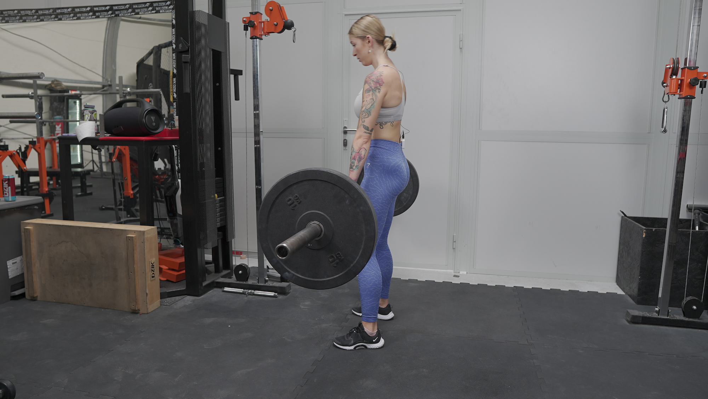
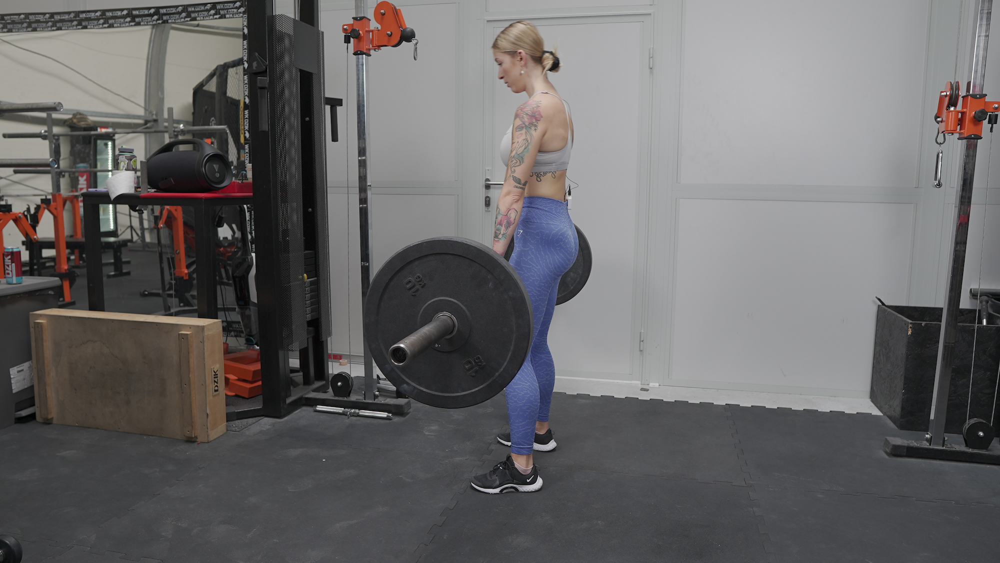

MARTWY CIĄG KLASYCZNY
 

1. Ustaw sztangę tak, aby znajdowała się mniej więcej na wysokości połowy Twoich piszczeli (załóż na sztangę krążki o dużej średnicy lub wykorzystaj stepy, na których położysz sztangę).
2. Stopy ustaw na szerokość swoich bioder, a palce skieruj przed siebie.
3. Złap sztangę nachwytem (od góry) nieco szerzej niż szerokość barków (tak aby nie przeszkadzały Ci Twoje nogi).
4. Wykonaj rotację w stawie ramiennym (skieruj zgięcie łokciowe przed siebie). Wyobraź sobie, że chcesz złamać sztangę.
5. Zepnij brzuch, mocno obniż pozycję bioder i wyprostuj plecy. Ściągnij łopatki.
6. Głowa powinna stanowić przedłużenie tułowia.
7. Wykonaj ruch ciągnięcia sztangi w górę, prowadząc ją bardzo blisko swoich nóg. Kolana nie mogą zapadać się do środka. Pamiętaj o napiętym brzuchu przez cały ruch.
8. Napnij pośladki w górnej fazie ruchu, ale nie wykonuj przeprostu.
9. Powróć do pozycji startowej, opuszczając sztangę blisko nóg, zachowując spięcie brzucha i proste plecy.